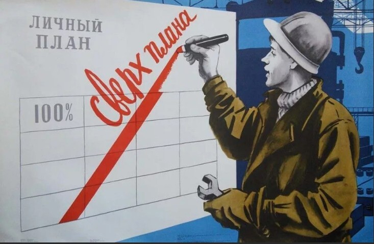

Фритрек и нулевой спринт: Подготовка к работе
</html>

Это было самое начало пути. На этом этапе важно было проникнуться основами и настроиться на учёбу. И, возможно, подумать, как новые знания могут повлиять на ваше будущее.
Я решил пройти обучение в Яндекс Практикуме, чтобы прокачать свои навыки, освоить новые технологии и стать лучше в своей профессии. Это вызов для меня, но я уверен, что благодаря практике и поддержке экспертов смогу достичь новых высот!